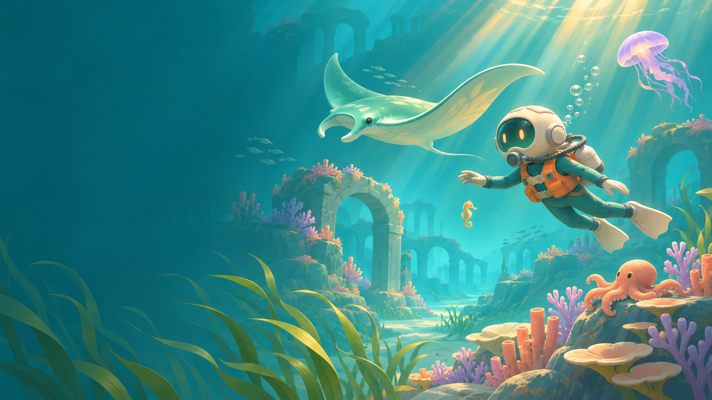

DIALOGUE ABYSS · ASSET ATLAS · v0.4把海的温柔，留在每一处细节
这份素材册与可玩项目一起交付。图片为视觉资产；实时游戏的角色和场景由三维代码生成。可分别替换、继续建模与扩展。

下载启动主视觉 · 进入游戏
一片海的颜色
可复用矢量图形
世界、角色与伙伴
实际三维模型 · glTF 2.0
八份带几何、材质与节点层级的静态模型，可导入 Godot。程序动画保留在 game.js，未烘焙为动画剪辑。
全部资产来源与复用说明
让声音有留白
每个场景都有旋律与氛围两层，游戏中交叉淡化。原创程序合成，不含商业游戏配乐。来源说明
动作与物理设计原则
关节围绕肩、肘、髋、膝转动；岩石与珊瑚作为实体避让。海草从根部逐渐增加摆幅；潜水员气泡沿水流上升。生物的童话动作以可辨识的行为节奏呈现，不宣称是生物学或流体力学模拟。